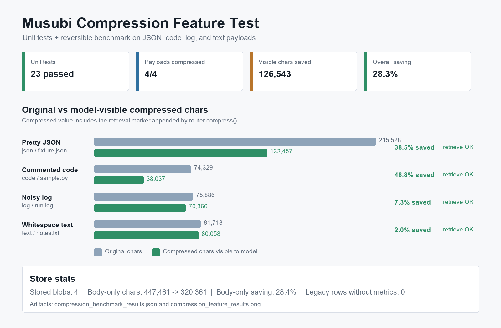

Musubi Compression Capability
Demonstrates input compression with verbatim recovery through musubi_retrieve(ref_id).
Baseline benchmark - model-visible chars include retrieval marker
Payloads compressed
4 / 4
Retrieve verification
4 / 4 OK
Visible chars saved
126,543
Overall saving
28.3%
Original vs compressed
Each row shows original chars and model-visible compressed chars after retrieval marker overhead is included.
Pretty JSON
json / fixture.json
38.5% saved
retrieve OK
Commented code
code / sample.py
48.8% saved
retrieve OK
Noisy log
log / run.log
7.3% saved
retrieve OK
Whitespace text
text / notes.txt
2.0% saved
retrieve OK
Original chars
Compressed chars visible to model
Capability summary
Reversible
The original is stored in the blob store by content hash. Each compressed result carries a ref_id for exact retrieval.
Zero LLM
The current compressor is deterministic: JSON minify, code/comment strip, and log/text whitespace collapse. The substrate makes no model calls.
Best fit
The baseline is strongest on pretty JSON and heavily commented code. Logs and prose are the next targets for pattern grouping and outline compression.
| Payload | Ref ID | Original | Compressed | Saved | Ratio |
|---|---|---|---|---|---|
| Pretty JSON | 7591476de31bacde |
215,528 | 132,457 | 83,071 | 0.615 |
| Commented code | 41b710d7cfe053ea |
74,329 | 38,037 | 36,292 | 0.512 |
| Noisy log | ca301907cc6a4b61 |
75,886 | 70,366 | 5,520 | 0.927 |
| Whitespace text | 312ab81e90b00f87 |
81,718 | 80,058 | 1,660 | 0.980 |
Generated benchmark image
The PNG below was generated from the same benchmark data.
